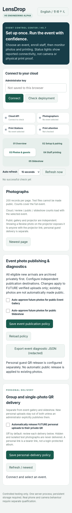

Cloud schema 9 · Android code16 · Windows Print Station unchanged. Source pilot; hardware and deployment testing pending.

This screenshot is from a static browser layout test, not a connected live Hostinger deployment.
Personal QR, public Gallery and Slideshow are separate. Printing does not publish. Do not delete event records or blindly replay uncertain print jobs. H5.9 cannot open schema9 without a matching pre-upgrade backup.
See H5_10_RELEASE_REPORT.md for complete changes, test results, limitations and rollback precautions.